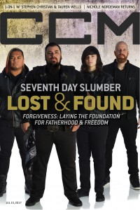

Seventh Day Slumber
|  |
| 15 July 2017 CCM Digital |
Media coverage:
- May 2003 in Christian Music Planet
- Jun 2003 in CCM "Ones to Watch: Don't Get In Our Way", by Jessica Robin
- Jul 2003 in HM "Seventh Day Slumber", by Jamie Lee Rake
- Jul 2004 in CCM "Insider: Studio Buzz"
- Feb 2005 in Heaven's Metal "Metal Tracks: True Story"
- Mar 2005 in HM "Hardnews: Seventh Day Slumber", by Lee Haley
- Jun 2005 in CCM "Final Verdict", by David A. Jenison
- Jun 2005 in Campus Life "Drugs Were My Escape", by Todd Hertz
- Jan 2007 in New Man "Guy Gear: Music: Shattered No More"
- Jan 2008 in Ignite Your Faith "My Daily Battle", by Todd Hertz
- Nov 2011 in Group "Ideas: Ministry and Media: Seventh Day Slumber", by Scott Firestone IV
- Nov 2011 in CCM Digital "The Fringe: Seventh Day Slumber", by Andy Argyrakis
- Apr 2013 in CCM Digital "What's New: Seventh Day Slumber", by Andy Argyrakis
- Jun 2013 in CCM Digital "Tour Spotlight: Kings & Queens Tour, The Compass Church, Naperville, IL", by Andy Argyrakis
- Jun 2014 in HM "They Will Be Added To Your Number Daily...", by Sean Huncherick
- 1 Jun 2014 in CCM Digital "Broken and Bold", by Andy Argyrakis
- 15 Jul 2017 in CCM Digital "Lost & Found", by Kevin Sparkman
Albums & reviews:
1999: Matthew Twenty Five
2009: Take Everything
2014: We are the Broken
- Jan 2000 in HM, by Gordon (a girl called)
- Jan 2002 in HM, by Doug Van Pelt
- Apr 2003 in CBA Marketplace, by Sean Taylor
- Apr 2003 in CCM, by Brian Quincy Newcomb
- May 2003 in YouthWorker, by Dave Urbanski
- May 2003 in HM, by John J. Thompson
- Mar 2005 in YouthWorker, by Dave Urbanski
- Mar 2005 in CBA Marketplace, by Rhonda Owens
- Mar 2005 in HM, by David Stagg
- Apr 2005 in CCM, by Anthony DeBarros
- May 2005 in New Man, by Chad Bonham, DeWayne Hamby
- May 2005 in Worship Leader
- Mar 2007 in CCM, by Doug Van Pelt
- Mar 2007 in Christian Music Planet, by Andy Argyrakis
- Mar 2007 in Relevant, by John Brandon
- May 2007 in HM, by Matt Conner
- Jul 2007 in Living With Teenagers, by Joy Fisher
2009: Take Everything
- Jan 2009 in Relevant
- May 2009 in HM, by Dan MacIntosh
- Oct 2011 in HM, by Dan MacIntosh
- Nov 2011 in CCM Digital, by Andy Argyrakis
- Jul 2011 in CCM Digital, by Andrew Greer
2014: We are the Broken
- 1 Jun 2014 in CCM Digital, by Bert Saraco
- 1 Dec 2015 in CCM Digital, by Andy Argyrakis
- 1 Jul 2017 in CCM Digital, by Matt Conner
Award Summary (Nominations / Wins)
Dove Awards- 2004 Dove Awards
- Rock Album: Picking Up The Pieces
- Spanish Language Album: Rescatame
Books about Seventh Day Slumber
- "Seventh Day Slumber" in The Encyclopedia of Contemporary Christian Music (Mark Allan Powell, 2002)

© 2011 CMnexus. Last updated September 2019. Contact: editor -AT- cmnexus -DØT- org About